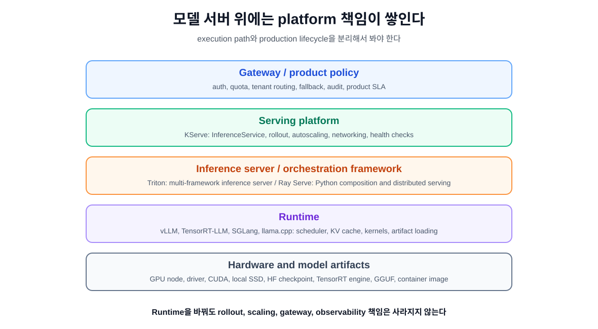
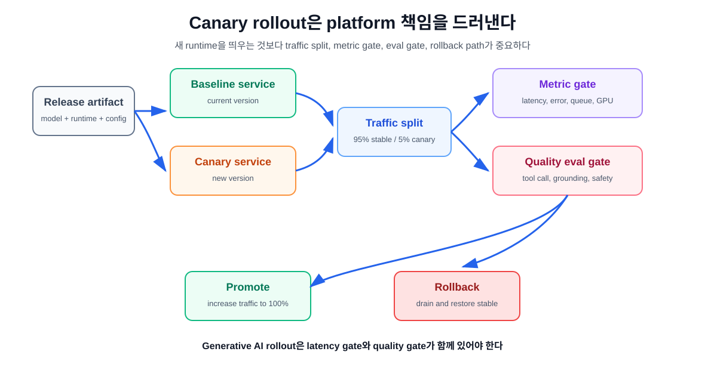

11장. Triton, KServe, Ray Serve: runtime 위의 platform 계층¶
10장에서 우리는 vLLM, TensorRT-LLM, SGLang, llama.cpp를 runtime으로 비교했다. 그런데 production에 가까워질수록 질문이 바뀐다.
모델 서버를 띄운 다음 production platform은 무엇을 더 해줘야 하는가?
Runtime은 모델을 실행한다. Platform은 그 runtime을 안전하게 배포하고, 라우팅하고, 스케일하고, 관측하고, 되돌릴 수 있게 만든다. 이 둘을 섞으면 YAML은 많아지는데 운영 책임은 흐려진다.
이 장의 독자 질문은 다음과 같다.
Inference server, model serving platform, orchestration framework는 어떻게 다르고, Triton, KServe, Ray Serve는 각각 어디에 놓아야 하는가?
핵심은 하나다. Platform은 "모델을 실행하는 방법"보다 "모델 서비스를 운영 가능한 단위로 만드는 방법"에 가깝다.
runtime과 platform을 먼저 분리한다¶
10장의 runtime 선택은 model artifact와 GPU execution path에 가까웠다. 11장의 platform 선택은 운영 책임에 가깝다.
| 계층 | 주된 질문 | 예 |
|---|---|---|
| runtime | 이 모델을 어떤 engine으로 실행할 것인가? | vLLM, TensorRT-LLM, SGLang, llama.cpp |
| inference server | 여러 model/backend를 어떤 protocol과 scheduler로 서빙할 것인가? | Triton Inference Server |
| serving platform | Kubernetes에서 model service lifecycle을 어떻게 표준화할 것인가? | KServe |
| orchestration framework | Python business logic, model composition, distributed execution을 어떻게 묶을 것인가? | Ray Serve |
| gateway / product layer | auth, quota, tenant, routing, fallback, audit를 어떻게 적용할 것인가? | API gateway, service mesh, internal platform |
이 구분이 중요한 이유는 간단하다. Runtime을 바꿔도 rollout, autoscaling, auth, model registry, incident response가 자동으로 생기지 않는다. 반대로 platform을 도입해도 runtime의 KV cache 병목이나 tokenizer mismatch가 사라지지는 않는다.

Triton: multi-framework inference server¶
NVIDIA Triton Inference Server는 여러 deep learning과 machine learning framework의 model을 배포하기 위한 open-source inference serving software다. 공식 문서는 TensorRT, PyTorch, ONNX, OpenVINO, Python backend 등 여러 framework를 지원하고, cloud, data center, edge, embedded 환경에서 inference를 제공한다고 설명한다.
Triton의 중심 개념은 "model repository와 backend를 가진 inference server"다. Request는 HTTP/REST 또는 gRPC로 들어오고, model별 scheduler로 라우팅된다. Scheduler는 필요하면 batching을 수행하고, backend가 실제 inference를 실행한다.
Triton이 잘 맞는 상황은 다음과 같다.
- LLM뿐 아니라 vision, ranking, embedding, tabular model 등 여러 framework model을 함께 서빙한다.
- HTTP/gRPC inference protocol, model repository, model management API가 필요하다.
- dynamic batching, sequence batching, concurrent model execution, ensemble pipeline이 중요하다.
- TensorRT-LLM, vLLM backend, Python backend 등 backend 기반으로 model serving을 표준화하고 싶다.
- Kubernetes와 붙일 readiness/liveness, metrics, tracing, model analyzer 같은 운영 도구가 필요하다.
Triton은 runtime이기도 하고 server이기도 하지만, Kubernetes-native platform 전체는 아니다. Triton이 model execution과 server protocol을 잘 다룬다면, Kubernetes 배포, rollout, traffic split, autoscaling policy, tenant policy는 다른 계층에서 다뤄야 한다.
| Triton이 해주는 것 | 별도로 설계해야 하는 것 |
|---|---|
| model repository, backend, scheduler, batching | service-level canary rollout |
| HTTP/gRPC/KServe protocol endpoint | Kubernetes CRD lifecycle |
| readiness/liveness, metrics, tracing | tenant auth, quota, product gateway |
| ensemble/BLS pipeline | application-level eval, release approval |
AI 인프라 엔지니어는 Triton을 "NVIDIA용 빠른 서버" 정도로만 보면 안 된다. Triton의 강점은 multi-framework inference server로서 model management와 protocol, batching, backend 확장성을 제공하는 데 있다.
KServe: Kubernetes-native model serving platform¶
KServe는 Kubernetes 위에서 predictive AI와 generative AI inference를 표준화하는 serving platform이다. 공식 사이트는 KServe를 scalable, multi-framework deployment를 위한 Kubernetes 기반 platform으로 설명하고, InferenceService CRD가 autoscaling, networking, health checking, server configuration 복잡도를 캡슐화한다고 설명한다.
KServe의 중심 단위는 InferenceService다. 사용자는 model format, storage URI, resource request, GPU limit 같은 정보를 선언하고, KServe는 deployment lifecycle과 routing을 관리한다.
KServe가 잘 맞는 상황은 다음과 같다.
- 팀이 이미 Kubernetes를 production platform으로 쓰고 있다.
- 모델 배포 단위를 CRD로 표준화하고 싶다.
- model service마다 networking, autoscaling, health check, revision, traffic routing을 일관되게 관리해야 한다.
- predictive model과 generative model을 같은 platform 관점에서 운영하고 싶다.
- canary rollout, A/B testing, inference graph, pre/post processing 같은 deployment pattern이 중요하다.
KServe의 장점은 runtime을 감싸는 platform contract를 제공한다는 점이다. 예를 들어 LLM serving에서는 vLLM 또는 llm-d 같은 backend를 활용하고, OpenAI-compatible protocol, model caching, GPU acceleration, autoscaling 같은 platform 기능을 함께 제공할 수 있다.
하지만 KServe도 모든 문제를 해결하지 않는다.
| KServe가 해주는 것 | 여전히 필요한 것 |
|---|---|
| Kubernetes CRD 기반 model lifecycle | model 품질 eval과 release approval |
| autoscaling, networking, health checking | GPU capacity planning과 node pool 설계 |
| canary rollout, A/B testing | application-level fallback policy |
| model storage URI와 resource declaration | model artifact versioning 기준 |
| predictive/generative serving abstraction | runtime별 tuning과 metric 해석 |
KServe를 YAML부터 배우면 목적을 놓치기 쉽다. 중요한 것은 InferenceService spec의 모든 필드를 외우는 것이 아니라, model serving을 Kubernetes production object로 바꾸는 책임이 무엇인지 이해하는 것이다.
Ray Serve: Python composition과 distributed serving¶
Ray Serve는 Ray 위에서 online inference API를 만들기 위한 scalable model serving library다. 공식 문서는 Ray Serve가 framework-agnostic이며 PyTorch, TensorFlow, Keras, Scikit-Learn model부터 arbitrary Python business logic까지 하나의 toolkit으로 서빙할 수 있다고 설명한다. 또한 LLM serving을 위한 response streaming, dynamic request batching, multi-node/multi-GPU serving 같은 기능을 제공한다.
Ray Serve가 특히 강한 지점은 model composition이다. 여러 model, retriever, preprocessor, postprocessor, validation logic, business rule을 Python code로 묶고, 각 step을 독립적으로 스케일할 수 있다.
Ray Serve가 잘 맞는 상황은 다음과 같다.
- inference path가 단일 model call이 아니라 Python business logic과 여러 component의 조합이다.
- RAG, agent, validation, custom routing, postprocessing을 한 application graph로 다루고 싶다.
- Kubernetes 없이 로컬 또는 Ray cluster에서 먼저 개발하고, 나중에 KubeRay로 확장하고 싶다.
- 각 component를 독립적으로 autoscale하고 싶다.
- model-specific optimized server보다 application composition과 distributed execution이 더 중요하다.
Ray Serve는 KServe나 Triton과 다른 질문에 답한다. "이 모델을 어떤 backend로 서빙할까"보다 "여러 model과 Python logic으로 된 inference application을 어떻게 scalable service로 만들까"에 가깝다.
주의할 점도 있다. Ray Serve 문서도 Ray Serve가 full-fledged ML platform은 아니라고 설명한다. Model lifecycle 관리, 성능 시각화, organization-wide governance는 별도 platform 계층이 필요할 수 있다. 또한 model-specific kernel optimization은 Triton이나 TensorRT-LLM 같은 runtime/server 계층과 별도로 봐야 한다.
세 도구를 같은 표에 억지로 넣지 않는다¶
Triton, KServe, Ray Serve는 모두 "serving"이라는 단어를 쓰지만 같은 범주의 제품이 아니다.
| 도구 | 가장 가까운 역할 | 먼저 물어볼 질문 |
|---|---|---|
| Triton | multi-framework inference server | 여러 backend와 model을 protocol, batching, metrics로 표준화할 것인가? |
| KServe | Kubernetes-native model serving platform | model service lifecycle, rollout, autoscaling을 Kubernetes CRD로 표준화할 것인가? |
| Ray Serve | programmable distributed serving framework | model composition과 Python business logic을 scalable service로 만들 것인가? |
따라서 선택은 배타적이지 않을 수 있다. 어떤 조직은 Triton을 model server로 쓰고 KServe로 Kubernetes lifecycle을 관리할 수 있다. 어떤 팀은 Ray Serve로 RAG application graph를 구성하고, 내부 step에서 optimized runtime을 호출할 수 있다. 중요한 것은 "하나만 골라야 한다"가 아니라 "어떤 계층의 책임을 해결하는가"다.
Canary rollout은 platform 책임을 보여 준다¶
Runtime 관점에서는 새 model artifact를 로드하면 끝처럼 보인다. Platform 관점에서는 그때부터가 시작이다. Production rollout은 보통 다음 질문을 포함한다.
- 새 model/runtime version을 몇 퍼센트 traffic에 보낼 것인가?
- p95 latency, error rate, refusal rate, tool call success rate가 나빠지면 자동으로 멈출 것인가?
- 기존 version으로 rollback할 경로가 있는가?
- user cohort, tenant, endpoint별로 traffic을 나눌 수 있는가?
- metric과 trace가 version label을 포함하는가?

KServe는 canary rollout과 A/B testing을 platform 기능으로 강조한다. Ray Serve는 application graph와 component-level autoscaling을 통해 rollout 전략을 만들 수 있다. Triton은 model repository와 model management, metrics를 제공하지만 service-level traffic split은 Kubernetes/service mesh/gateway 계층과 함께 설계해야 한다.
Platform을 도입하기 전에 고정할 계약¶
Platform을 고르기 전에 먼저 service contract를 문서화해야 한다.
| 계약 | 질문 |
|---|---|
| endpoint contract | OpenAI-compatible인가, native protocol인가, gRPC인가? |
| artifact contract | HF checkpoint, TensorRT engine, GGUF, container image, model storage URI 중 무엇이 release 단위인가? |
| resource contract | GPU type, GPU count, CPU, memory, model cache, local SSD가 얼마나 필요한가? |
| scaling contract | 무엇을 기준으로 replica를 늘릴 것인가? QPS, concurrency, queue, GPU memory, custom metric? |
| rollout contract | canary traffic 비율, promotion gate, rollback trigger는 무엇인가? |
| observability contract | metric, log, trace, eval result에 model/runtime/version label이 있는가? |
| failure contract | timeout, OOM, bad output, safety failure, dependency failure를 어떻게 구분하는가? |
이 계약 없이 platform부터 도입하면 YAML과 controller는 생기지만 운영 판단은 여전히 사람 머릿속에 남는다.
실습: platform responsibility checklist 만들기¶
10장에서 runtime 후보를 고른 뒤, 11장에서는 다음 checklist를 채운다.
| 항목 | 현재 상태 | 필요한 platform 책임 | 후보 |
|---|---|---|---|
| runtime | vLLM / TensorRT-LLM / SGLang / llama.cpp | 실행과 tuning | runtime |
| packaging | container image / model storage URI | 재현 가능한 release | CI/CD, registry |
| deployment | manual command / Kubernetes YAML | rollout과 rollback | KServe, Ray Serve, custom |
| routing | direct endpoint / gateway | traffic split, tenant routing | gateway, KServe, service mesh |
| scaling | fixed replica / HPA / custom | queue와 GPU 기준 scaling | KServe, Ray Serve, KEDA, HPA |
| observability | runtime metrics only | version-aware dashboard | Prometheus, Grafana, tracing |
| eval gate | manual spot check | quality and safety gate | eval pipeline |
| incident response | restart server | rollback, drain, rate limit | platform runbook |
이 표의 목적은 특정 도구를 고르는 것이 아니라 빠진 책임을 찾는 것이다. 예를 들어 runtime metrics는 있는데 version-aware dashboard가 없다면, canary rollout을 해도 어떤 version이 문제인지 추적하기 어렵다. Kubernetes deployment는 있는데 model artifact release record가 없다면 rollback은 형식만 있는 셈이다.
실패 패턴¶
YAML을 platform이라고 착각한다¶
Kubernetes YAML이 있다고 platform이 되는 것은 아니다. Release approval, traffic policy, metric gate, rollback runbook이 없다면 배포 파일만 있는 상태다.
runtime tuning과 platform scaling을 섞는다¶
max_num_seqs, KV cache size, batch token limit은 runtime tuning이다. Replica count, node pool, autoscaling policy는 platform scaling이다. 둘은 연결되지만 같은 레버가 아니다.
GPU autoscaling을 QPS만으로 한다¶
LLM serving에서 QPS 10은 token shape에 따라 완전히 다른 부하다. Platform scaling은 QPS뿐 아니라 input token, output token, active sequence, queue time, KV cache usage를 함께 봐야 한다.
canary를 latency만으로 판단한다¶
새 model이 빠르더라도 tool call format, grounding, refusal behavior, citation quality가 나빠질 수 있다. Generative AI rollout은 latency gate와 quality gate가 함께 필요하다.
platform이 security와 governance를 자동으로 해결한다고 본다¶
KServe나 Ray Serve를 도입해도 tenant isolation, auth, audit log, data retention, policy enforcement는 별도 설계가 필요하다.
정리¶
- Runtime은 model execution path를 다루고, platform은 deployment lifecycle과 운영 책임을 다룬다.
- Triton은 multi-framework inference server로 model repository, backend, scheduler, batching, metrics에 강하다.
- KServe는 Kubernetes-native model serving platform으로
InferenceService, autoscaling, networking, health checking, rollout을 표준화한다. - Ray Serve는 Python business logic과 model composition을 scalable online service로 만드는 데 강하다.
- Canary rollout은 platform 책임을 가장 잘 보여 주는 예다. Traffic split, metric gate, eval gate, rollback path가 함께 있어야 한다.
- Platform 도입 전에는 endpoint, artifact, resource, scaling, rollout, observability, failure contract를 먼저 문서화해야 한다.
Source anchors¶
- NVIDIA Triton Inference Server docs: https://docs.nvidia.com/deeplearning/triton-inference-server/user-guide/docs/
- KServe website and docs: https://kserve.github.io/website/
- Ray Serve docs: https://docs.ray.io/en/latest/serve/index.html